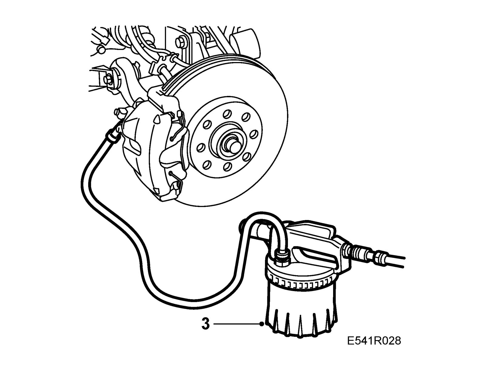
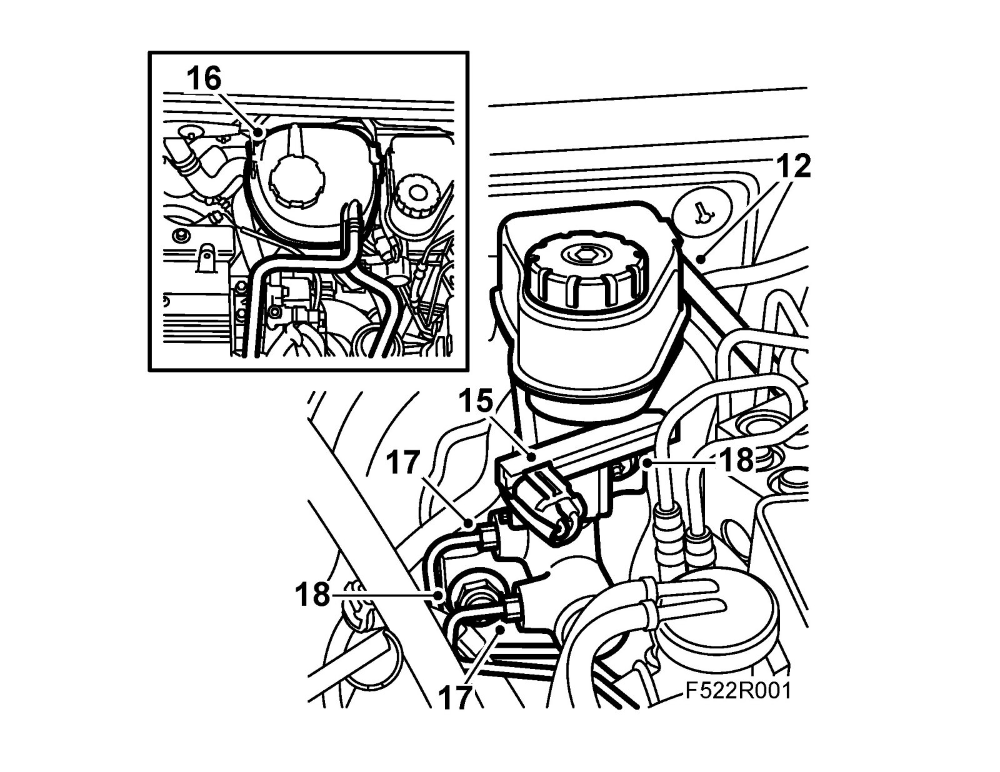
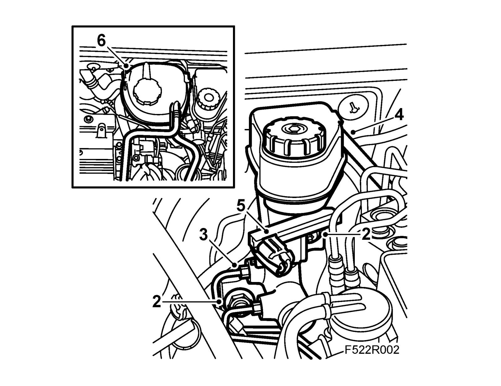

Master Cylinder
Master cylinderTo remove
1. Place wing covers on the front wings.
2. Raise the car.
3. Connect the brake bleeder to the air nipple on the front left wheel.

4. Open the nipple and suction out the brake fluid until one of the reservoir chambers is empty.
5. Disconnect the brake bleeder and close the nipple.
6. Connect the brake bleeder to the air nipple on the right front wheel.
7. Open the nipple and suction out the brake fluid until one of the reservoir chambers is empty.
8. Disconnect the brake bleeder and close the nipple.
9. Manual gearbox: Connect the brake bleeder to the clutch bleed nipple.
10. Manual gearbox: Open the nipple and suction out oil until the level in the reservoir falls below the connection.
11. Manual gearbox: Disconnect the brake bleeder and close the nipple.
12. Manual gearbox: Remove the clutch hose from the brake fluid reservoir. Place some rags underneath to collect any brake fluid that may run out.

13. RHD, petrol engine: Remove the intake hose.
14. RHD, diesel engine: Remove the air filter cowling.
15. Remove the connector for the brake fluid reservoir level sensor.
16. LHD: Loosen the coolant reservoir, lift it away and move it to the side.
17. Remove the brake pipes from the master cylinder.
18. Remove the nuts securing the master cylinder to the brake servo.
19. Remove the master cylinder.
20. Remove the locking bolt from the brake fluid reservoir and detach the reservoir from the cylinder.
To fit
1. Fit the brake fluid reservoir to the master cylinder.
2. Fit the master cylinder. Apply 74 96 268 Thread locking adhesive. Make sure the pushrod on the master cylinder makes contact with the brake servo pushrod.
Tightening torque: 25 Nm (18 lbf ft)

3. Fit the brake pipes to the master cylinder.
Tightening torque: 16 Nm (12 lbf ft)
4. Manual gearbox: Connect the hose from the main clutch cylinder to the reservoir.
5. Plug in the connector to the level sensor.
6. LHD: Fit the coolant reservoir.
7. Fill with brake fluid and bleed the brakes and clutch.
8. RHD, petrol engine: Fit the air filter cowling.
9. RHD, diesel engine: Fit the intake hose.